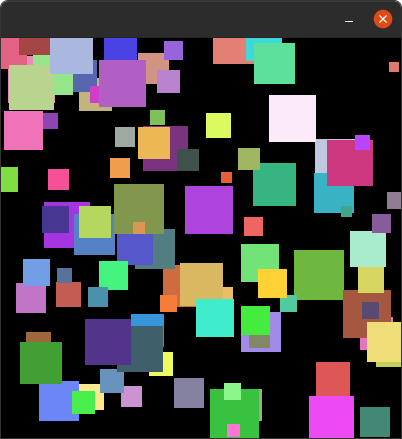

Homework 4 (Colorful Squares)
Part 1
Write a python program using pycat to create an output like the picture below.
Hints:
Use a
forloop to create lots of spritesEach sprite has a random position e.g.
self.go_to_random_position()Each sprite has a random scale e.g.
self.scale = randint(a, b)Each sprite has a random color e.g.
self.color = Color.random_rgb()- You will need to import:
from pycat.core import Colorfrom random import randint

part 1